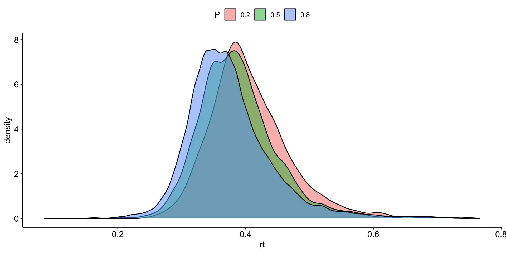
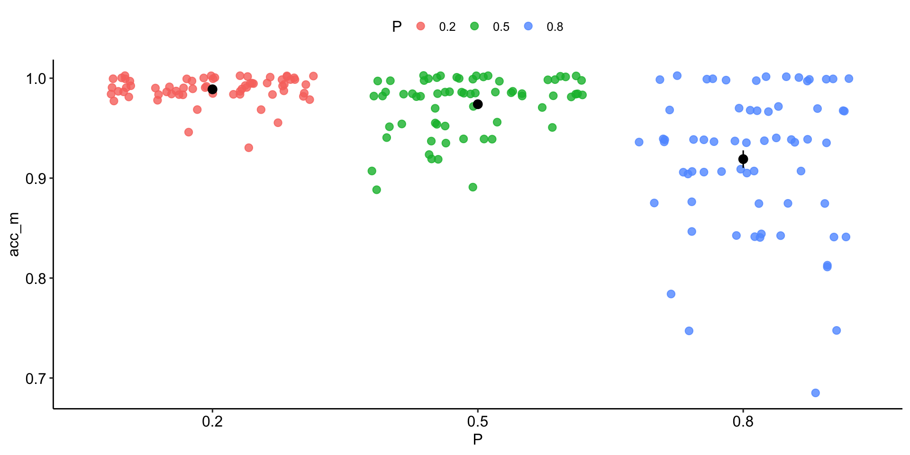
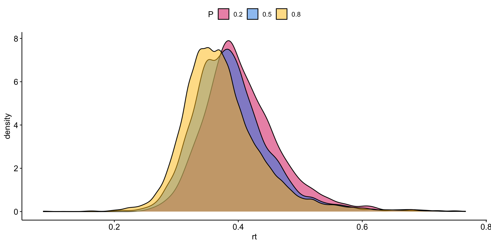
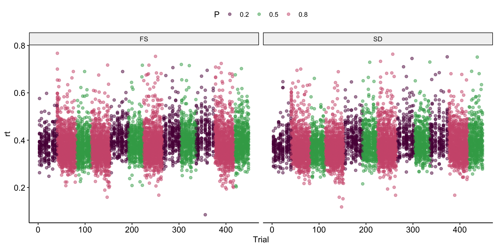
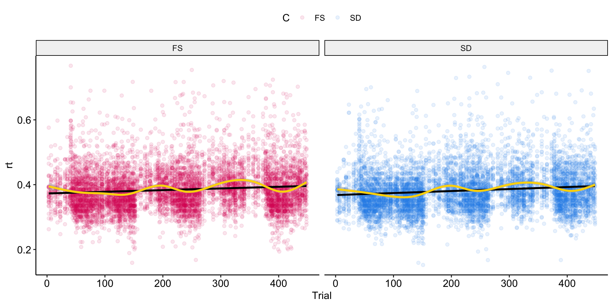
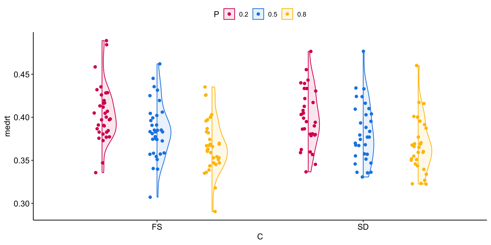
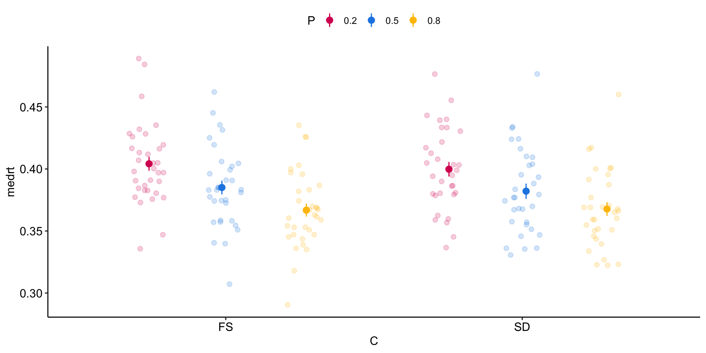
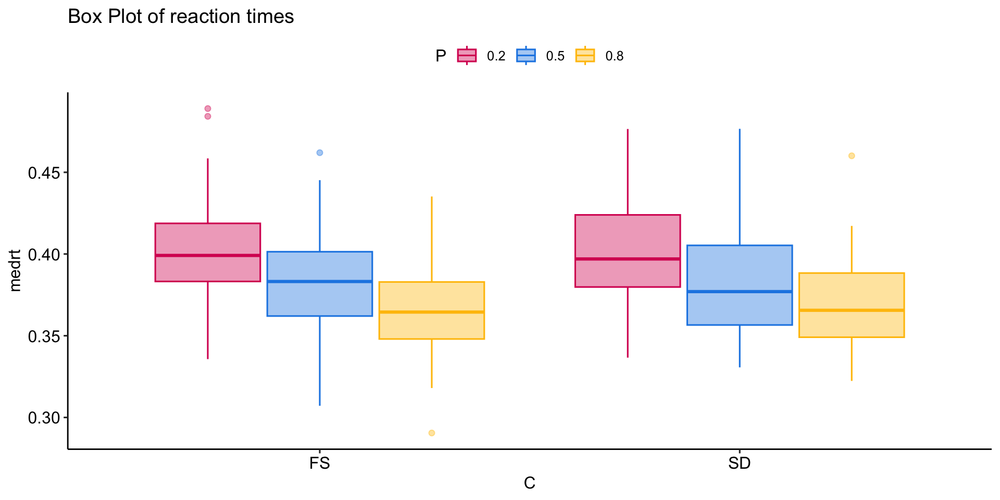
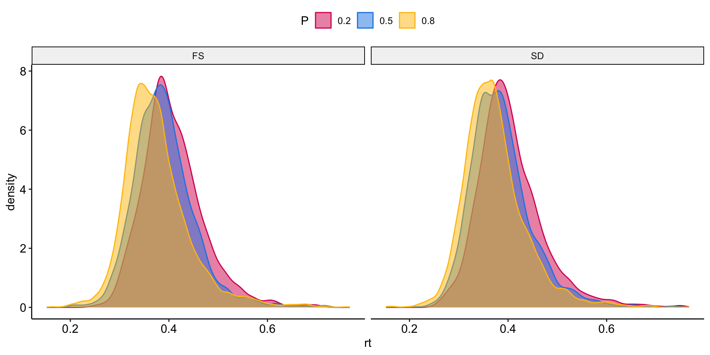

readr tidyverse ggplot2 ggpubr
TRUE TRUE TRUE TRUE Steps before data analysis
As a first step, it is good practice to load the required packages (and first install them if they are not installed yet).
You may not have a single dataset with all the subjects together, but instead have to load one dataset per subject and combine them afterwards. For this kind of operation the map_dfr function is useful (similar to apply, it is in the purrr package, from the magic world of the tidyverse).
list.files lets you search and see which files match a specific pattern. In my case I go into the folder and load all the data in .csv format (I use the head function to show you the first 6)
[1] "dataRaw/GNG100_1_SD.csv" "dataRaw/GNG101_1_FS.csv"
[3] "dataRaw/GNG102_1_SD.csv" "dataRaw/GNG103_1_FS.csv"
[5] "dataRaw/GNG104_1_FS.csv" "dataRaw/GNG106_1_FS.csv"I apply the map_dfr function to all the files just obtained with the list.files function…
Error in dplyr::bind_rows(): ! Can’t combine ..37$session ..38$session
For some reason, in some files the session information is read as double instead of character. So inside map_dfr I also add mutate
For example, I check that the subjects used the assigned IDs. The unique() function is very useful because it returns a vector without duplicated elements (in my dataset I had 448 trials per subject, so each id is repeated 448 times).
[1] "GN100" "GNG101" "GNG102" "GNG103" "GNG104" "GNG106" "GNG107" "GNG15"
[9] "GNG16" "GNG17" "GNG18" "GNG19" "GNG20" "GNG21" "GNG22" "GNG23"
[17] "GNG24" "GNG25" "GNG26" "GNG27" "GNG28" "GNG29" "GNG33" "GNG34"
[25] "GNG35" "GNG36" "GNG37" "GNG38" "GNG39" "GNG40" "GNG41" "GNG42"
[33] "GNG43" "GNG44" "GNG45" "GNG46" "GNG47" "GNG48" "GNG49" "GNG50"
[41] "GNG53" "GNG54" "GNG55" "GNG56" "GNG58" "GNG59" "GNG60" "GNG61"
[49] "GNG62" "GNG63" "GNG64" "GNG66" "GNG67" "GNG68" "GNG69" "GNG70"
[57] "GNG71" "GNG73" "GNG74" "GNG76" "GNG78" "GNG79" "GNG80" "GNG81"
[65] "GNG82" "GNG83" "GNG87" "GNG85" "GNG86" "GNG88" "GNG89" "GNG90"
[73] "GNG92" "GNG93" "GNG94" "GNG95" "GNG96" "GNG97" "GNG98" The grep() function searches for a pattern inside a string; in this case the subject id was supposed to be GNG…
[1] 2 3 4 5 6 7 8 9 10 11 12 13 14 15 16 17 18 19 20 21 22 23 24 25 26
[26] 27 28 29 30 31 32 33 34 35 36 37 38 39 40 41 42 43 44 45 46 47 48 49 50 51
[51] 52 53 54 55 56 57 58 59 60 61 62 63 64 65 66 67 68 69 70 71 72 73 74 75 76
[76] 77 78 79[1] "GN100"…and that they entered the experimental condition correctly…
[1] "SD" "FS" "sd" "fs"
[5] "FF" "CONDIZIONE SD" "CONDIZIONE FS"I convert the variables I am interested in to factors, and keep only those I need for visualization and analysis. We can use mutate() to mutate/change the variable type, and select() to select the variables of interest:
A quick check of the structure of the dataset
tibble [35,392 × 8] (S3: tbl_df/tbl/data.frame)
$ id : Factor w/ 79 levels "GNG100","GNG101",..: 1 1 1 1 1 1 1 1 1 1 ...
$ P : Factor w/ 3 levels "0.2","0.5","0.8": 1 1 1 1 1 1 1 1 1 1 ...
$ target: Factor w/ 2 levels "go.png","nogo.png": 2 2 1 2 2 2 1 2 2 2 ...
$ C : Factor w/ 2 levels "FS","SD": 2 2 2 2 2 2 2 2 2 2 ...
$ B : Factor w/ 12 levels "1","2","3","4",..: 1 1 1 1 1 1 1 1 1 1 ...
$ rt : num [1:35392] NA NA 0.396 NA NA NA 0.377 NA NA NA ...
$ resp : chr [1:35392] NA NA "space" NA ...
$ Trial : num [1:35392] 1 2 3 4 5 6 7 8 9 10 ...If there is a response and the trial was Go, then correct (1); if there is a response and the trial was NoGo, then wrong (0)…
Sometimes some subjects are excluded a priori because they did not follow the “rules” of the experiment; in this case you can exclude them right away
dat_clean=subset(dat,
# PSQI = 14
id != "GNG82" &
# not respect sleep schedule
id != "GNG16" &
id != "GNG21" & id != "GNG40" &
id != "GNG46" & id != "GNG51" &
id != "GNG52"& id != "GNG58" &
id != "GNG65" & id != "GNG72" &
id != "GNG75" & id != "GNG83"&
id != "GNG92" & id != "GNG95"&
id != "GNG96" & id != "GNG105")
# you can also create a vector of IDs to exclude and then use %in%In my case I also wanted to exclude everyone with accuracy below 70%. To compute descriptive statistics, the group_by and summarise functions from the dplyr package (tidyverse again) are very useful
[1] GNG102 GNG102 GNG38 GNG59 GNG59
79 Levels: GNG100 GNG101 GNG102 GNG103 GNG104 GNG106 GNG107 GNG15 ... GNG98So I exclude them using the negation of %in% (which checks whether an element is present in a vector)
I check that the ids with accuracy below .7 are indeed gone
After cleaning the data it is good to check how much information is left, for example the number of subjects per group. n_distinct counts the number of unique combinations..
One of the best packages for data visualization is ggplot2; you can do practically anything with it.
The first reason to visualize data is to see their distribution, the presence of extreme values… ggplot takes as input which variables to use for x and y (or only one of the two, depending on what we want to plot); I can also specify colors and various other things we will see…

dat_clean2 %>% subset(target == "nogo.png") %>%
group_by(id,P)%>% # group the dataset by id and P
# compute the mean accuracy per condition/subject
summarise(acc_m = mean(acc))%>% #
ggplot(aes(y= acc_m, x = P, color = P))+
geom_jitter(alpha = .8, size = 2.5)+ # dots
stat_summary(color = "black") # add mean and se
A simple and nice thing to do is to create your own color palette to use whenever you want in your plots. You can define it at the beginning or write it in a separate script and load it with the source() command, as we saw for functions. At this link you can find lots of (colorblind-friendly) colors

With the facet_wrap() function we can split the plot, for example with one panel for each group in my case, using ~ C

dat_clean2 %>% subset(target == "go.png" & rt > .15) %>%
ggplot(aes(y= rt, x = Trial, color = C))+
geom_point(alpha = .1)+facet_wrap(~ C) +
scale_color_manual(values = my_pal$pal1)+
geom_smooth(method = "lm", color = "black", alpha = .5)+ #linear
geom_smooth(method = "gam", #additive
color = "gold")
dat_clean2 %>% subset(target == "go.png" & rt > .15) %>%
group_by(id,C,P)%>%
summarise(medrt = median(rt))%>%
ggplot(aes(y= medrt, x = C, color = P, fill = P))+
see::geom_violinhalf(position = position_dodge(width = .8),
alpha = .1)+
geom_jitter(position = position_jitterdodge(jitter.width = .2,
dodge.width = 0.8))+
scale_color_manual(values = my_pal$pal1)+
scale_fill_manual(values = my_pal$pal1)
dat_clean2 %>% subset(target == "go.png" & rt > .15) %>%
group_by(id,C,P)%>%
summarise(medrt = median(rt))%>%
ggplot(aes(y= medrt, x = C, color = P, fill = P))+
geom_jitter(alpha = .2, size = 2, position = position_jitterdodge(jitter.width = .3,
dodge.width = 0.8))+
stat_summary(size = .5, position =position_jitterdodge(jitter.width = .1,
dodge.width = 0.8))+
scale_color_manual(values = my_pal$pal1)+
scale_fill_manual(values = my_pal$pal1)
dat_clean2 %>% subset(target == "go.png" & rt > .15) %>%
group_by(id,C,P)%>%
summarise(medrt = median(rt))%>%
ggplot(aes(y= medrt, x = C, color = P, fill = P))+
geom_boxplot(alpha = .4, position = position_dodge(width = .8))+
scale_color_manual(values = my_pal$pal1)+
scale_fill_manual(values = my_pal$pal1)+
ggtitle("Box Plot of reaction times")

my_plot = dat_clean2 %>% subset(target == "go.png" & rt > .15) %>%
ggplot(aes(x= rt, color = P, fill = P))+ geom_density(alpha = .5) +
facet_wrap(~C)+ scale_color_manual(values = my_pal$pal1)+
scale_fill_manual(values = my_pal$pal1)+
xlab("RTs in sec")
# create the plot folder
dir.create("plot")
# save inside the plot folder
ggsave("plot/my_plot.jpg", my_plot,dpi = 600, width = 18,
height = 10, units = "cm")Another thing you may find useful is creating tables with, for example, descriptive statistics or the output of a statistical model. For these operations the flextable or kableExtra packages are very useful: